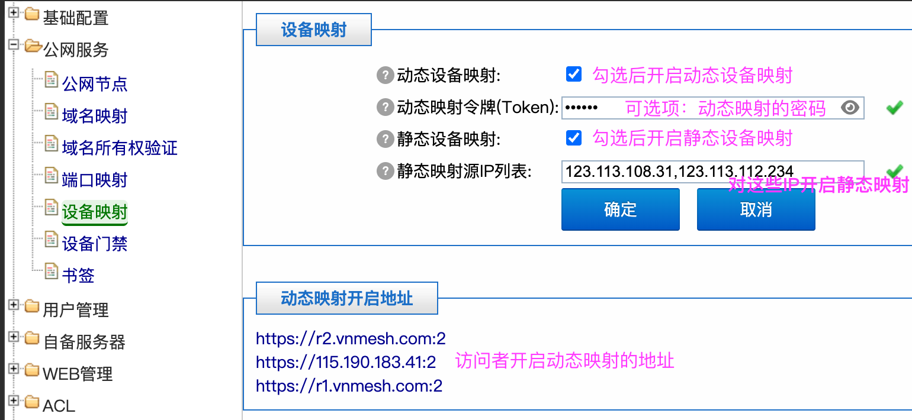
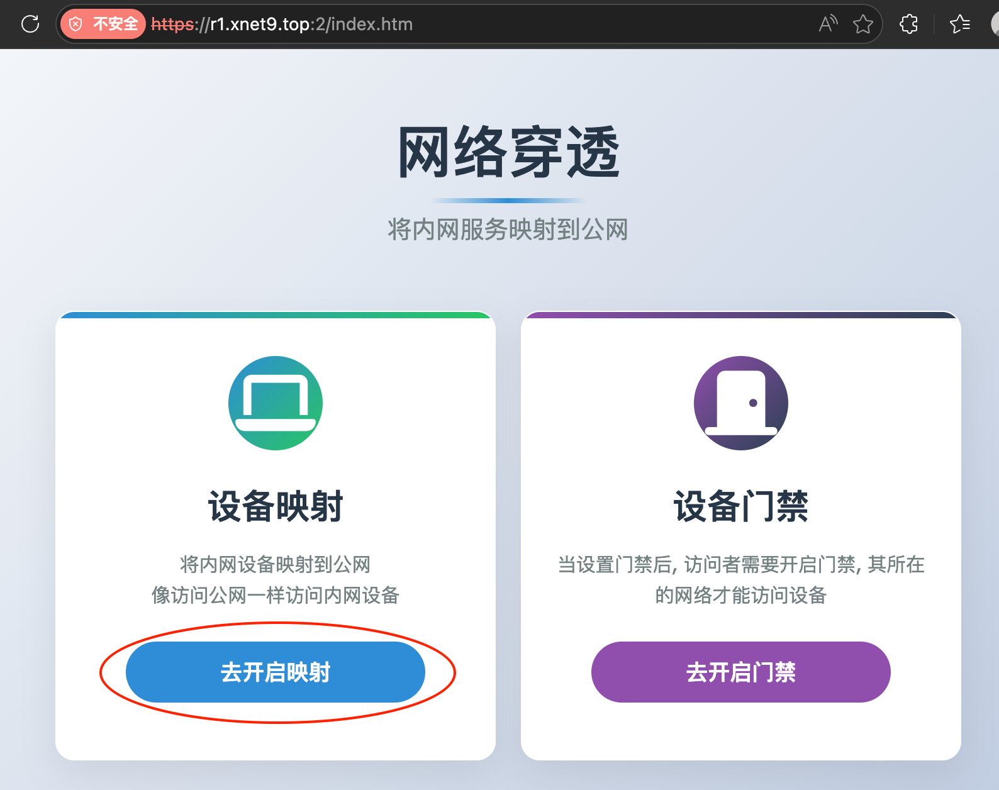

设备映射可以将内网整个设备全端口映射到公网。
静态设备映射:
配置路径: "公网服务-设备映射"。

配置视图： config-view -> xnetc-view
使用示例:
xnetc-view>public-service hostfwd static enable xnetc-view>public-service hostfwd ip enable xnetc-view>public-service hostfwd token 123456 xnetc-view>no public-service hostfwd static enable xnetc-view>no public-service hostfwd ip enable
命令说明:
| [no] public-service hostfwd static enable | 开启/关闭静态设备映射 |
| [no] public-service hostfwd ip enable | 开启/关闭动态设备映射 |
| public-service hostfwd token %TOKEN | 配置动态设备映射token为%TOKEN, 例如: 123456 |
| no public-service hostfwd token | 取消token |
启用"动态设备映射后", 访问者就可以使用浏览器访问: https://公网节点:2

点击"去开启映射", 跳转到如下界面:
输入您的 用户ID或用户名 和 设备名 以及 访问令牌(Token) 后点击 开启映射 按钮。此时您访问此公网地址就会映射到内网设备。
此页面会定期自动刷新以维持访问权限的开启。
当管理员关闭访问权限时, 所有连接立即中断, 这会禁止本网络内所有人的访问。
当管理员机器休眠或者管理员关闭此页面后, 访问权限的会在一段时间后自动关闭。
TCP端口2被作为动态设备映射的管理端口, 不参与动态设备映射
在"公网服务-设备映射"页面配置勾选"静态设备映射"并配置访问者的源IP即可。
例如，配置为"1.1.1.1"，则从"1.1.1.1"访问公网节点, 就会被映射到内网设备。
可配置多个静态IP。
当有多台设备开启静态设备映射时, 这些设备之间互为主备状态, 任意一台故障, 会自动切换到另一台。
到"自建服务器-服务器"中配置自建服务器地址，然后在自建服务器上安装服务软件，开启完全设备映射，即可体验完全设备映射了。
自建服务器软件地址: https://www.vnmesh.com/download/vnmesh_pn.htm
完全设备映射会将内网设备完全暴漏到公网，可以配合ECS上的安全组或ACL提高安全性。